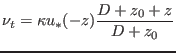
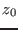
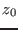
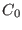
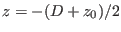
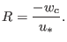

Next: Northern North Sea - Up: Biogeochemical scenarios Previous: Biogeochemical scenarios Contents
In this scenario, the water depth and the surface slope have been chosen identical to those in the purely physical channel scenario introduced in section 12.1.2.
Under certain conditions, the suspended matter equation
has an analytical solution:
Let the eddy diffusivity profile be parabolic with
|  | (274) |
with the depth  , the bottom roughness length , the van Karman
number
, the bottom roughness length , the van Karman
number  and the bottom friction velocity
and the bottom friction velocity  and the vertical
coordinate
and the vertical
coordinate  .
Then the analytical solution of (273) is
.
Then the analytical solution of (273) is
where  is the suspended matter concentration at i and depends on the initial conditions for . The Rouse number is then defined as:
|  | (276) |
When running the rouse scenario with a two-equation turbulence closure model, then the analytical solution for the Rouse profile is only approximated, since the eddy diffusivity deviates from (275). In order to be closer to the analytical solution, it is ncessary to chose in gotmturb.nml the analytical parabolic profile for eddy diffusivity, which is done by the follwing settings in gotmturb.nml:
&turbulence turb_method= 2, tke_method= 1, len_scale_method=4, stab_method= 1
This Rouse scenario may be calculated with Eulerian concentrations or with Lagrangian particles, depending on the setting of bio_eulerian in bio.nml. When using the Lagrangian particle method, it is advisable to average the concentration over all time steps which belong to one output time step, by setting bio_lagrange_mean=.true.
It is also possible to include a sink term at the bed (for simulating the effect of grazing by benthic filter feeder), the seetings for this have to be made in mussels.nml.
Karsten Bolding 2012-01-24